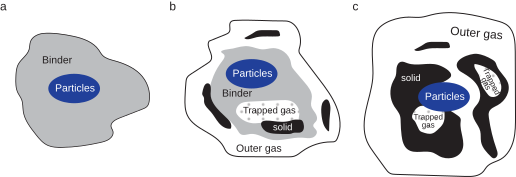

The thermosetting pyrolysis physics module is a collection of objects serving as building blocks for composing model's describing the thermosetting pyrolysis kinetics where a binder \((b)\) in a particle \((p)\) matrix material converts to a solid \((s)\) and gas \((g)\). The framework and usage of the model is explained below, with both mathematical formulations and example input files.
Framework
The thermosetting pyroslysis processs of a binder-particle composite is shown schematically in the figure below. This is a temperature controlled process in which the binder gets decomposed into gas and solid where a portion of the gas is trapped inside either the binder and/or the solid. Meanwhile, the particle's mass remains the same throughout the pyrolysis and the amount of produced solid does not go through any further decomposition or reaction.

Let \(m_i\) with \(i=p,b,g,s\) denotes the current state masss of the particle, binder, gas and solid respectively. In addition, let \(m_i^j\) with superscript \(j = o,f\) represents the initial and final mass. By the end of the pyrolysis process, all of the binder got convert to solid with final yield
\[ \Phi = \dfrac{m_s^f-m_s^o}{m_b^o}
\]
A value \(\Phi=0.5\) means the mass of NEWLY produced solid by the end of the pyrolysis process is 50% the mass of the initial binder.
Note: \(\Phi\) is a binder material specific properties, which mainly applicable for thermosetting plastic such as phenolic resin
Pyrolysis Kinetics Model
The pyrolysis kinetics material model calculates the solid conversion amount \(\alpha\), following the modified Arrhenius Reaction:
\[ \dot{\alpha} = A \exp{\dfrac{-E_A}{RT}} f(\alpha)
\]
where \(A\) (unit \(T^{-1}\)) is the heating rate dependence coefficients, \(E_A\) ( \(L^2MT^{-2}mol^{-1}\)) is the activation energy, \(T\) is the temperature and \(R\) is the universal gas constant. \(f(\alpha)\) is the reaction mechanism model.
Here,
\[ \alpha = \dfrac{m_b^o - (m_s-m_s^o)}{m_b^o-(m_s^f-m_s^o)} = \dfrac{1 + m_s^o/m_b^o - m_s / m_b^o}{1 - \Phi}
\]
Then, the mass of consumed binder following
\[ m_b^o - m_b = \int_{m_s^o}^{m_s}{\phi(m,T,...)\dd m}
\]
\( \phi \) denotes the instantaneous char yield where \( \phi(m_s^f,T,...) = \dfrac{1}{\Phi}\) - the final char yield at the end of the pyrolysis process.
Finally, the mass of gas produced can be obtained from conservation of mass.
\[ m_g = m_g^o + \int_{m_s^o}^{m_s}{\phi(m,T,...)\dd m} - m_s + m_s^o
\]
Governing Equations
The initial-value problem (IVP) corresponding to the consitutive model is
\[ \mathbf{r} = \begin{Bmatrix}
r_{m_s} \\
r_{m_b} \\
r_{m_g} \\
\end{Bmatrix} = \mathbf{0},
\]
where \(r_{m_i}\) is the residual corresponding to the mass of the solid, binder, and product. The mass of the particle remains unchanged. The residuals are defined below. Note an implicit backward-Euler time integration scheme is used.
- Mass production rate of the solid, following the modified Arrhenius equation with an additional reaction mechanism term.
\[ r_{m_s} = \dfrac{\alpha_{n+1} - \alpha_n}{t_{n+1}-t_n} - A \exp{\dfrac{-E_A}{RT_n}} f(\alpha_n)
\]
- Mass consumption rate of the binder, depending on the instantaneous char yield function. For simplicity, considered \(\phi = \dfrac{1}{\Phi}\), then
\[ r_{m_b} = \dfrac{m_{b,n+1} - m_{b,n}}{t_{n+1}-t_n} + \dfrac{1}{\Phi}\dfrac{m_{s,n+1} - m_{s,n}}{t_{n+1}-t_n}
\]
- Mass production rate of the gas, based on conservation of mass.
\[ r_{m_g} = \dfrac{m_{g,n+1} - m_{g,n}}{t_{n+1}-t_n} + (1-\dfrac{1}{\Phi})\dfrac{m_{s,n+1} - m_{s,n}}{t_{n+1}-t_n}
\]
Implementation Details
The above governing equations are fairly general for a wide range of thermo pyrolysis systems, especially when the exact chemical equation balance of the process is not well-understood and can be substitute with experiment measured value of final yield \( \Phi \).
To complete the model, one needs to define the reaction mechanism function \(f(\alpha)\) described in the Pyrolysis Kinetics Model. Currently, two classes of reaction mechanisms are provided:
- Chemical reaction mechanism with reaction order \(n\) and coefficient \(k\)
\[ f(\alpha) = k(1-\alpha)^n
\]
- Nucleation reaction mechanism with reaction order \(n\) and coefficient \(k\), following Avrami Erofeev equation
\[ f(\alpha) = k(1-\alpha)(-\ln(1-\alpha))^n
\]
The following tables summarize the relationship between the mathematical expressions and NEML2 models.
| Residual Expression | Syntax |
| \( r_{m_s} = \dfrac{\alpha_{n+1} - \alpha_n}{t_{n+1}-t_n} - A \exp{\dfrac{-E_A}{RT_n}} f \) | Linear Combination, Variable Rate |
| \( r_{m_b} = \dfrac{m_{b,n+1} - m_{b,n}}{t_{n+1}-t_n} + \dfrac{1}{\Phi}\dfrac{m_{s,n+1} - m_{s,n}}{t_{n+1}-t_n} \) | Linear Combination, Variable Rate |
| \( r_{m_g} = \dfrac{m_{g,n+1} - m_{g,n}}{t_{n+1}-t_n} + (1-\dfrac{1}{\Phi})\dfrac{m_{s,n+1} - m_{s,n}}{t_{n+1}-t_n} \) | Linear Combination, Variable Rate |
Note on accounting for volume change during the pyrolysis:
To use for macroscopic finite element (FE) model, often the volume of the system is a quantity of interest. With known density, it is straight forward to determine the corresponding volume of the particle, binder, and solid. On the contrary, gas is compressible thus the volume is arbitrary. To address this issue, one needs to account for the gas that
- could freely exit the FE element - open gas
- got trapped during the pyrolysis process - trapped gas
(1) can be resolved through a porous flow type partial differential equation (PDE). This process inevitably produce voids. Then, one need to provide the model to account for (2), which lead to an additional residual component in the IVP.
Example Input File
A complete example input file for the pyrolysis is shown below with the appropriate model composition. The postprocess section in the xxxx input file shows how to use NEML2 model to obtain mass and volume fraction. The input below does not account for trapped gas and gas that exist the FE element.
nbatch = '(1)'
nstep = 100
# denisty kgm-3
rho_s = 320
rho_b = 1250 # 1.2 and 1.4
rho_g = 1
rho_p = 3210
rho_sm1 = 3.125e-3
rho_bm1 = 8e-4 # 1.2 and 1.4
rho_gm1 = 1
rho_pm1 = 0.00311526479
# heat capacity Jkg-1K-1
cp_s = 1592
cp_b = 1200
cp_g = 1e-4
cp_p = 750
# thermal conductivity W/m-1K-1
k_s = 1.5
k_b = 0.279
k_g = 1e-4
k_p = 380 #120 and 490
# reaction type
Ea = 177820 # J mol-1
A = 5.24e12 # s-1
R = 8.31446261815324 # JK-1mol-1
Y = 0.7
Ym1 = 1.428571429 # 1/Y
invYm1 = -0.4285714285 # 1-1/Y
order = 1.0
k = 1.0
# initial mass kg
ms0 = 0.5
mb0 = 10
mp0 = 25
mg0 = 1e-5
alpha0 = 3.333333 # 1/(1-Y)
[Tensors]
############### Run condition ###############
[endtime]
type = Scalar
values = '100'
batch_shape = '${nbatch}'
[]
[times]
type = LinspaceScalar
start = 0
end = endtime
nstep = '${nstep}'
[]
[endT]
type = Scalar
values = '1500'
batch_shape = '${nbatch}'
[]
[T]
type = LinspaceScalar
start = 0
end = endT
nstep = '${nstep}'
[]
############### Simulation parameters ###############
[Ea]
type = Scalar
values = '${Ea}'
batch_shape = '${nbatch}'
[]
[A]
type = Scalar
values = '${A}'
batch_shape = '${nbatch}'
[]
[order]
type = Scalar
values = '${order}'
batch_shape = '${nbatch}'
[]
[k]
type = Scalar
values = '${k}'
batch_shape = '${nbatch}'
[]
[]
[Drivers]
[driver]
type = TransientDriver
model = 'model'
prescribed_time = 'times'
time = 'forces/tt'
force_Scalar_names = 'forces/T'
force_Scalar_values = 'T'
show_input_axis = false
show_output_axis = false
show_parameters = false
ic_Scalar_names = 'state/mp state/mb state/mg state/ms state/alpha'
ic_Scalar_values = '${mp0} ${mb0} ${mg0} ${ms0} ${alpha0}'
save_as = 'test.pt'
verbose = false
[]
[regression]
type = TransientRegression
driver = 'driver'
reference = 'gold/result.pt'
[]
[]
[Solvers]
[newton]
type = Newton
rel_tol = 1e-8
abs_tol = 1e-10
max_its = 100
verbose = false
[]
[]
[Models]
[amount]
type = PyrolysisConversionAmount
initial_mass_solid = '${ms0}'
initial_mass_binder = '${mb0}'
reaction_yield = '${Y}'
mass_solid = 'state/ms'
reaction_amount = 'state/alpha'
[]
[reaction]
type = ChemicalReactionMechanism
scaling_constant = 'k'
reaction_order = 'order'
reaction_amount = 'state/alpha'
reaction_out = 'state/f'
[]
[pyrolysis]
type = PyrolysisKinetics
kinetic_constant = 'A'
activation_energy = 'Ea'
ideal_gas_constant = '${R}'
temperature = 'forces/T'
reaction = 'state/f'
out = 'state/pyro'
[]
[amount_rate]
type = ScalarVariableRate
variable = 'state/alpha'
time = 'forces/tt'
rate = 'state/alpha_dot'
[]
[residual_ms]
type = ScalarLinearCombination
coefficients = "1.0 -1.0"
from_var = 'state/alpha_dot state/pyro'
to_var = 'residual/ms'
[]
[rms]
type = ComposedModel
models = 'amount reaction pyrolysis amount_rate residual_ms'
[]
[solid_rate]
type = ScalarVariableRate
variable = 'state/ms'
time = 'forces/tt'
rate = 'state/ms_dot'
[]
[binder_rate]
type = ScalarVariableRate
variable = 'state/mb'
time = 'forces/tt'
rate = 'state/mb_dot'
[]
[residual_binder]
type = ScalarLinearCombination
coefficients = "1.0 ${Ym1}"
from_var = 'state/mb_dot state/ms_dot'
to_var = 'residual/mb'
[]
[rmb]
type = ComposedModel
models = 'solid_rate binder_rate residual_binder'
[]
[gas_rate]
type = ScalarVariableRate
variable = 'state/mg'
time = 'forces/tt'
rate = 'state/mg_dot'
[]
[residual_gas]
type = ScalarLinearCombination
coefficients = "1.0 ${invYm1}"
from_var = 'state/mg_dot state/ms_dot'
to_var = 'residual/mg'
[]
[rmg]
type = ComposedModel
models = 'solid_rate gas_rate residual_gas'
[]
[rmp]
type = ScalarLinearCombination
coefficients = "1.0 -1.0"
from_var = 'state/mp old_state/mp'
to_var = 'residual/mp'
[]
[model_residual]
type = ComposedModel
models = 'rmp rms rmb rmg'
automatic_scaling = false
[]
[model_update]
type = ImplicitUpdate
implicit_model = 'model_residual'
solver = 'newton'
[]
[amount_new]
type = PyrolysisConversionAmount
initial_mass_solid = '${ms0}'
initial_mass_binder = '${mb0}'
reaction_yield = '${Y}'
mass_solid = 'state/ms'
reaction_amount = 'state/alpha'
[]
[model_solver]
type = ComposedModel
models = 'amount_new model_update'
additional_outputs = 'state/ms'
[]
################################### POST PROCESS #################################
#########
######### weight fraction
[M]
type = ScalarLinearCombination
coefficients = "1.0 1.0 1.0 1.0"
from_var = 'state/mp state/mb state/mg state/ms'
to_var = 'state/M'
[]
[wb]
type = ScalarVariableMultiplication
from_var = 'state/mb state/M'
to_var = 'state/wb'
reciprocal = 'false true'
[]
[wp]
type = ScalarVariableMultiplication
from_var = 'state/mp state/M'
to_var = 'state/wp'
reciprocal = 'false true'
[]
[ws]
type = ScalarVariableMultiplication
from_var = 'state/ms state/M'
to_var = 'state/ws'
reciprocal = 'false true'
[]
[wg]
type = ScalarVariableMultiplication
from_var = 'state/mg state/M'
to_var = 'state/wg'
reciprocal = 'false true'
[]
[wout]
type = ComposedModel
models = 'M wb wp ws wg'
[]
#########
######### volume fraction
[Vb]
type = ScalarLinearCombination
coefficients = '${rho_bm1}'
from_var = "state/mb"
to_var = "state/Vb"
[]
[Vp]
type = ScalarLinearCombination
coefficients = '${rho_pm1}'
from_var = "state/mp"
to_var = "state/Vp"
[]
[Vg]
type = ScalarLinearCombination
coefficients = '${rho_gm1}'
from_var = "state/mg"
to_var = "state/Vg"
[]
[Vs]
type = ScalarLinearCombination
coefficients = '${rho_sm1}'
from_var = "state/ms"
to_var = "state/Vs"
[]
[V]
type = ScalarLinearCombination
coefficients = "1.0 1.0 1.0 1.0"
from_var = 'state/Vp state/Vb state/Vg state/Vs'
to_var = 'state/V'
[]
[vb]
type = ScalarVariableMultiplication
from_var = 'state/Vb state/V'
to_var = 'state/vb'
reciprocal = 'false true'
[]
[vp]
type = ScalarVariableMultiplication
from_var = 'state/Vp state/V'
to_var = 'state/vp'
reciprocal = 'false true'
[]
[vg]
type = ScalarVariableMultiplication
from_var = 'state/Vg state/V'
to_var = 'state/vg'
reciprocal = 'false true'
[]
[vs]
type = ScalarVariableMultiplication
from_var = 'state/Vs state/V'
to_var = 'state/vs'
reciprocal = 'false true'
[]
[vout]
type = ComposedModel
models = 'V Vp Vb Vg Vs vb vp vs vg'
[]
[model]
type = ComposedModel
models = 'model_solver vout wout'
additional_outputs = 'state/ms state/mp state/mg state/mb'
[]
[]
 1.13.2
1.13.2